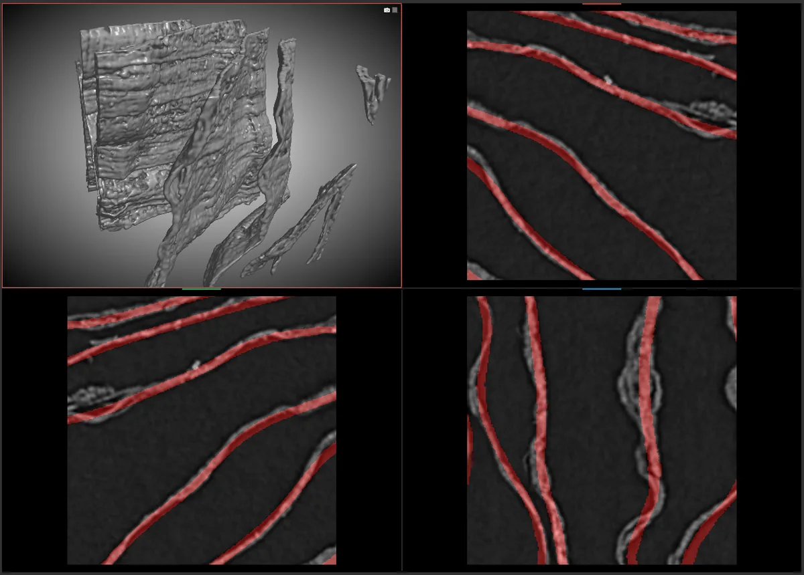

Evaluation & Metrics
How a prediction becomes a score: the three competition metrics and their weights, what each one rewards, the post-processing operations that repair topology, and the offline scoring lab that searches over them.
1. The composite score

Competition performance is a single number assembled from three metrics with different sensibilities. Understanding what each one rewards is the fastest way to understand why the model and post-processing code look the way they do.
| Metric | Weight | Definition | What it punishes |
|---|---|---|---|
| SurfaceDice | 0.35 |
A boundary-overlap score computed within a distance tolerance: voxels near the surface count if a matching surface voxel is found within the tolerance. | A surface in the wrong place. Tolerant of small thickness errors, intolerant of positional error. |
| VoiScore | 0.35 |
Derived from the variation of information between the predicted and reference labellings, computed over a fixed voxel neighbourhood and mapped into a bounded score. | Both stray positives and missing material — it is a symmetric information measure, not a one-sided error count. |
| TopoScore | 0.30 |
Betti-number matching per homology dimension: how many connected components, tunnels and cavities the prediction has, compared with the reference. | Discrete structural error. A single extra hole or missing tunnel costs real score. |
The three are complementary by construction. SurfaceDice and VoiScore are continuous and are largely satisfied by getting the segmentation approximately right. TopoScore is discrete and is not — which is why it is the term that drives the modelling and post-processing effort in this repository.
1.1 Scoring configuration
The metric implementations themselves are supplied by an external package (see
Dependencies); the
scoring entry point is topometrics.leaderboard.compute_leaderboard_score. What this
repository owns is the configuration those metrics are called with, the per-case orchestration,
and the post-processing that runs before a score is taken. Each parameter below is a module-level
default in metrics/kaggle_metrics.py and can be overridden by the caller.
| Parameter | Default | Meaning |
|---|---|---|
DEFAULT_TOPO_WEIGHT | 0.30 |
Weight applied to TopoScore in the composite. |
DEFAULT_SURFACE_DICE_WEIGHT | 0.35 |
Weight applied to SurfaceDice in the composite. |
DEFAULT_VOI_WEIGHT | 0.35 |
Weight applied to VoiScore in the composite. |
DEFAULT_SURFACE_TOLERANCE | 2.0 |
Distance tolerance, in voxels, within which a predicted surface voxel counts as matching. |
DEFAULT_VOI_CONNECTIVITY | 26 |
Neighbourhood used to build the labelling that the variation of information is computed over. |
DEFAULT_VOI_TRANSFORM | one_over_one_plus |
Mapping applied to the raw divergence to bring VoiScore onto a bounded, higher-is-better scale. |
DEFAULT_VOI_ALPHA | 0.3 |
Blend factor used by that mapping. |
BINARY_THRESHOLD | 0.5 |
Default probability threshold applied to a probability volume before scoring. |
Keeping the weights as overridable defaults rather than constants is what makes the scoring lab viable: a candidate post-processing strategy can be evaluated under a modified weighting without editing the metric module.
2. How TopoScore is computed
TopoScore works from Betti numbers: for a 3D binary volume, the number of independent connected components (dimension 0), independent tunnels or handles (dimension 1) and enclosed cavities (dimension 2). Each dimension is scored separately and then combined.
- Extract the reference topology. Betti numbers are computed from the ground-truth mask of the case.
- Extract the predicted topology. The same computation is applied to the thresholded prediction.
- Score each dimension. For each dimension, agreement between the two counts is turned into a per-dimension score. Because a topological feature is either present or not, matching counts is the whole signal.
- Combine dimensions. The per-dimension scores are combined into a weighted average, so a dimension where matching is hard does not silently dominate.
- Handle absent dimensions. Structure that does not occur in a given case cannot be scored. When a dimension has no features in the reference, it is excluded and the remaining weights are renormalised, so cases are not penalised for structure they do not contain.
Why this metric is hard to move Because the signal is a count, the score is insensitive to how wrong a prediction is. A prediction with one voxel of spurious bridge and a prediction with a completely different connectivity structure can score identically. There is no partial credit, which means topology has to be treated as a design constraint throughout the pipeline rather than as something to clean up at the end.
3. The metrics module
The competition metric is implemented through an external metrics package, wrapped in a module that adds the post-processing stage and parallel orchestration. The wrapper’s responsibilities:
| Responsibility | Detail |
|---|---|
| Thresholding | A fixed probability threshold converts the continuous prediction into a binary mask; this is the single most influential knob before any structural repair. |
| Ignore handling | Voxels whose reference label is the ignore class are excluded from scoring, and regions not covered by a scored patch are treated as ignore rather than as confident background. |
| Post-processing | A configurable chain of the operations described in section 4, applied to the binarised prediction. |
| Delegation | The three component scores and the composite combination are computed by the external metrics package, which is the reference implementation. |
| Parallelism | Cases are scored across a worker pool sized from the machine’s CPU count, with one case per worker lifetime to keep peak memory bounded — a practical necessity when each case involves several full-resolution volumes. |
| Aggregation | Per-case results are averaged into the reported SurfaceDice, TopoScore, VoiScore and composite score, with a sequential mode available for debugging. |
4. Post-processing operations
Roughly two dozen operations are implemented in the metrics module alone. They are not interchangeable — each targets a specific way a prediction can be nearly right but topologically wrong. Grouping them by intent makes the set legible:
| Family | Operations | What they fix |
|---|---|---|
| Denoising & smoothing | Gaussian smoothing, adaptive histogram equalisation, morphological cleanup, small-object removal, small-hole filling. | Speckle and isolated voxel noise that creates spurious components, and pinholes that create spurious tunnels. |
| Thickness & closure | Anisotropic closing, sheet thinning, probabilistic closing, cavity filling. | Broken sheets that need reconnecting, and sheets that are too thick or have enclosed voids where the reference has none. |
| Continuity | Slice-continuity enforcement, directional hole filling, connected-component refinement. | Discontinuities across adjacent slices — the characteristic failure of a model that handles each slice independently. |
| Selection | Size and extent filtering, keep-top-k components, fragment removal, edge-spanning filtering, connected-threshold, watershed extension. | Choosing which structures are real. Sheets are large, extended and cross the volume; noise is small and compact, so selection rules are highly effective. |
| Merging & separation | Sheet-merge prevention, anti-bifurcation-oriented filters, graph-based merging, aggressive connection. | The two opposing topological failure modes: splits that should be joined, and bridges that should not exist. |
| Probability-space operations | Probability diffusion, hysteresis thresholding. | Operating on the continuous field rather than a binarised mask, so a confident core can recruit a weak but genuine neighbourhood — the standard remedy for fragmented thin structures. |
Several of these are aggregated into named strategies, each a fixed combination of operations with tuned parameters. Naming the combinations is what makes the results comparable: a report can say which strategy was used rather than listing a dozen parameter values.
5. The offline scoring lab
The metrics module is the scoring path. Alongside it sits a substantially larger body of
code under exploration/scoring/: a laboratory for discovering which post-processing
actually helps. It exists because post-processing is a search problem, and searching inside the
training loop would be far too slow.
| Concern | What the lab provides |
|---|---|
| Scoring harness | A script that scores a directory of predictions, applies a chosen post-processing strategy, and reports the component metrics — the entry point for any comparison. |
| Strategy families | Distinct approaches with their own rationales: threshold-oriented strategies, precision-focused strategies, micro-hole repair, adaptive topology-driven strategies, and ribbon/continuity strategies aimed at keeping sheets unbroken. |
| Strategy registry | Strategies are registered by name and dispatched from one place, so a new idea is added rather than replacing an old one, and any strategy can be re-scored later. |
| Prediction analysis | Tools that characterise the probability distribution of a prediction — where the model is confident, where it is ambiguous — to inform which strategy is likely to suit it before spending time on a sweep. |
| Adaptive recommendation | An analysis that derives which strategy family suits a given prediction from measurable features of that prediction, rather than applying one strategy everywhere. |
| Prediction utilities | Inference wrappers and converted-prediction handling shared across the experiments, including the multi-GPU partitioned predictor. |
Why a separate lab is the right structure Inference is expensive and post-processing is cheap. Keeping the two apart means a strategy can be re-evaluated against stored predictions in minutes, and a sweep over dozens of strategies costs no GPU time at all. It also makes the results honest: every strategy is compared on exactly the same predictions.
6. What a score actually reports
When a scoring pass finishes, the useful output is the four numbers together, not the composite alone. The composite hides which term is limiting, and the three terms move independently:
| Pattern | Likely cause | Where to look |
|---|---|---|
| High SurfaceDice, low TopoScore | The surface is in the right place but structurally wrong — broken into pieces, or bridged across a gap. | Topological loss terms; anti-bifurcation loss; continuity post-processing. |
| Low SurfaceDice, high VoiScore | The region is being found but its boundary is systematically misplaced or too thick. | Surface and boundary loss terms; threshold choice. |
| Low VoiScore, high TopoScore | Large regions are being missed or added, but wherever the model is active it is structurally consistent. | Recall-oriented overlap terms; patch sampling; threshold. |
| All three low | The model has not learned the task in the current configuration. | Data contract and augmentation first, model second. |
| All three high but composite still limited | Expected at this stage of the problem — this is a genuinely hard task. | Post-processing strategy selection, which is where remaining gains are cheapest. |
The single most important habit to build with this codebase is to look at the three components before touching anything. They identify which stage of the pipeline the problem is in, and that determines whether the next change belongs in the data code, the loss, or the post-processing lab.